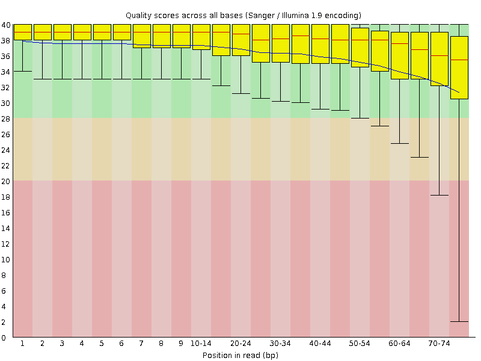
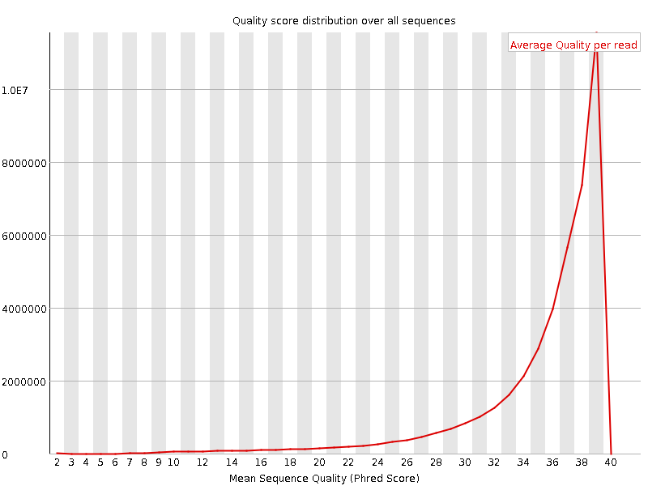
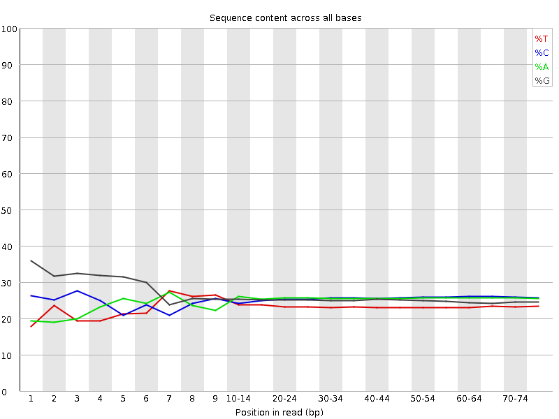
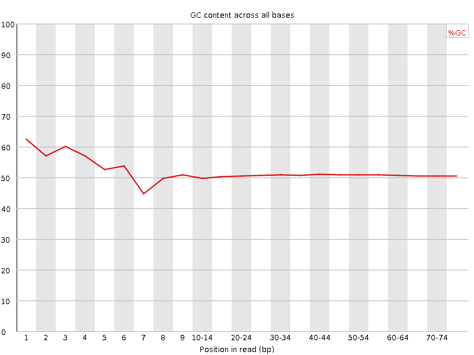
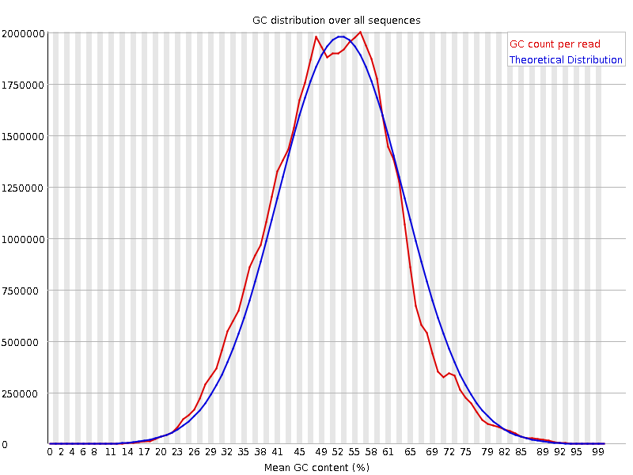
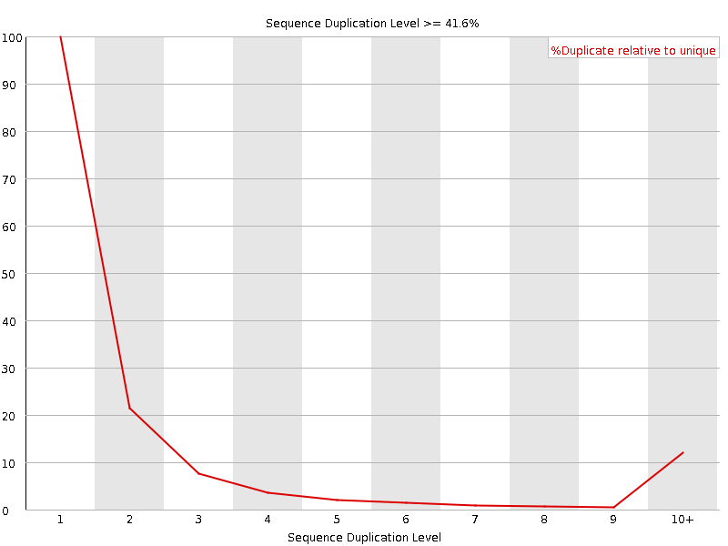
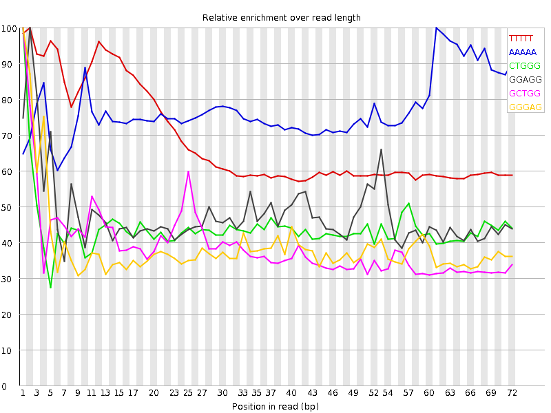

![[OK]](Icons/tick.png) Basic Statistics
Basic Statistics
| Measure | Value |
|---|---|
| Filename | SRR315310_1.fastq |
| File type | Conventional base calls |
| Encoding | Sanger / Illumina 1.9 |
| Total Sequences | 43218536 |
| Filtered Sequences | 0 |
| Sequence length | 76 |
| %GC | 51 |
Per base sequence quality

Per sequence quality scores

![[WARN]](Icons/warning.png) Per base sequence content
Per base sequence content

![[FAIL]](Icons/error.png) Per base GC content
Per base GC content

Per sequence GC content

Per base N content

Sequence Length Distribution

Sequence Duplication Levels

Overrepresented sequences
| Sequence | Count | Percentage | Possible Source |
|---|---|---|---|
| GCTGGATAGTAGGTAGGGACAGTGGGAATCTCGTTCATCCATTCATGCGC | 58365 | 0.13504622183407602 | No Hit |
| GGCGGGGGTGCGTCGGGTCTGCGAGAGCGCCAGCTATCCTGAGGGAAACT | 51564 | 0.1193099183183808 | No Hit |
Kmer Content

| Sequence | Count | Obs/Exp Overall | Obs/Exp Max | Max Obs/Exp Position |
|---|---|---|---|---|
| TTTTT | 8333180 | 3.8871186 | 5.6711802 | 2 |
| AAAAA | 11330630 | 3.4056566 | 4.4168983 | 61 |
| CTGGG | 8311285 | 2.656185 | 6.038986 | 1 |
| GGAGG | 8362170 | 2.438315 | 5.1096516 | 2 |
| GCTGG | 7318630 | 2.3389447 | 5.9596186 | 1 |
| GGGAG | 7427270 | 2.1657083 | 5.5715013 | 1 |
| GGGGG | 5976685 | 1.7295659 | 7.418501 | 1 |
| TGGGG | 5395340 | 1.7177644 | 5.4409246 | 2 |
| GGGGA | 5785340 | 1.68694 | 6.1272745 | 1 |
| GTGGG | 5195980 | 1.6542922 | 6.292027 | 1 |
| GGGGT | 4269715 | 1.3593887 | 6.3653097 | 3 |
| CGGGG | 4074970 | 1.1837132 | 5.6723685 | 1 |
| GGCGG | 3837810 | 1.114822 | 5.0759826 | 1 |